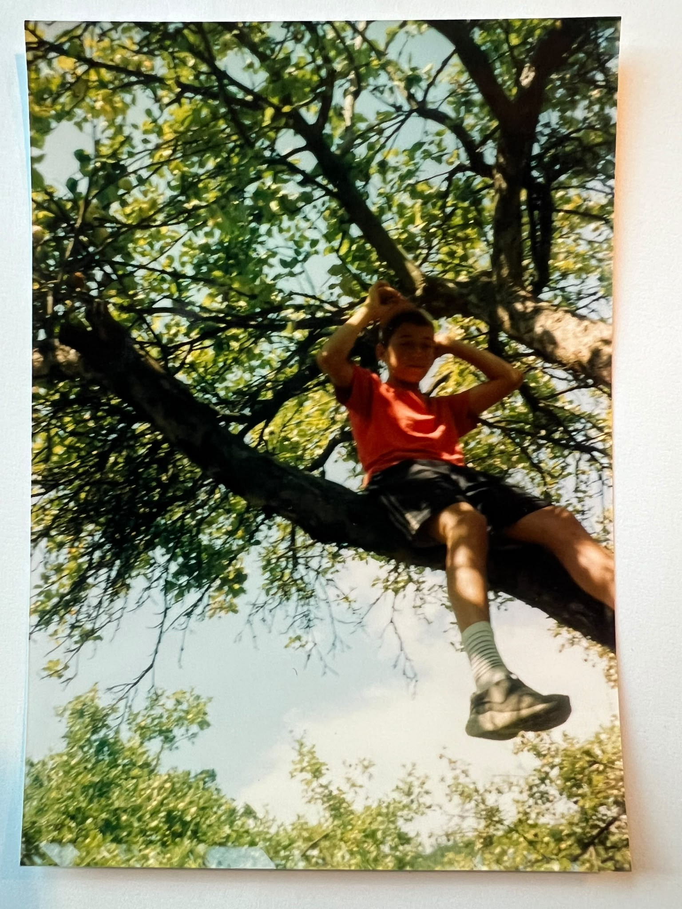
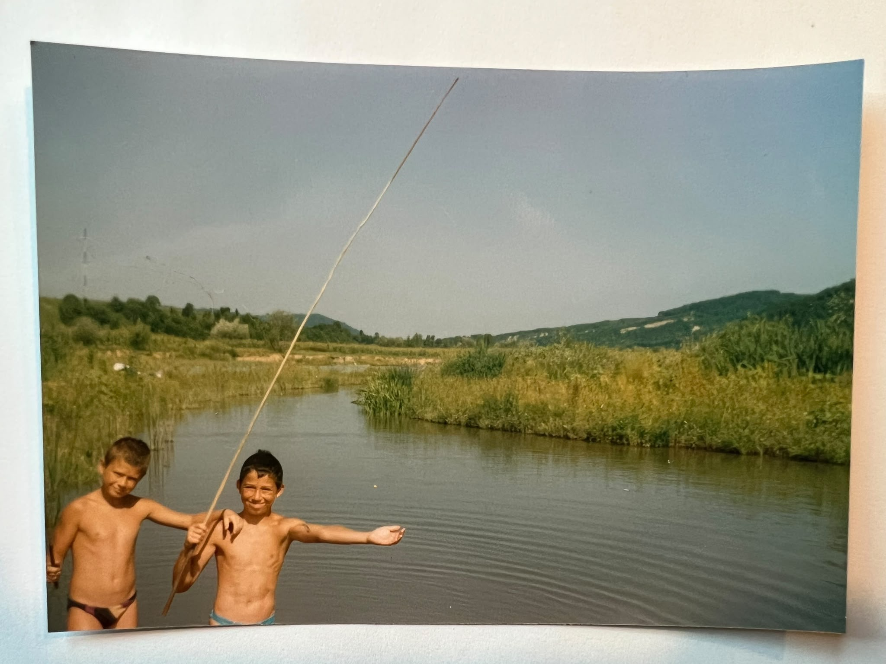
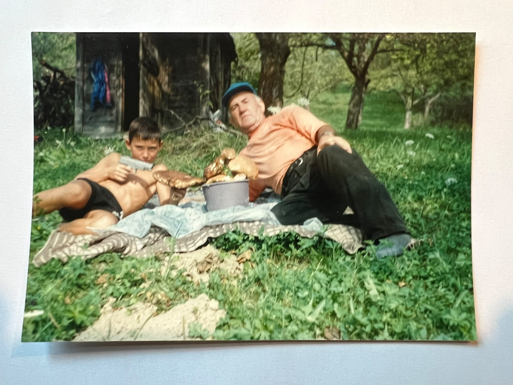
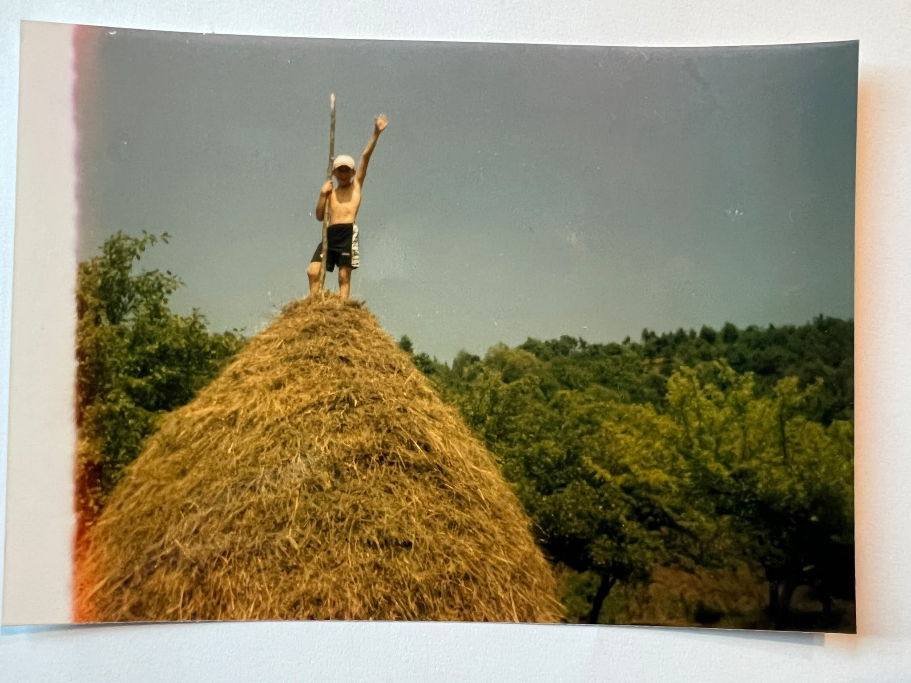
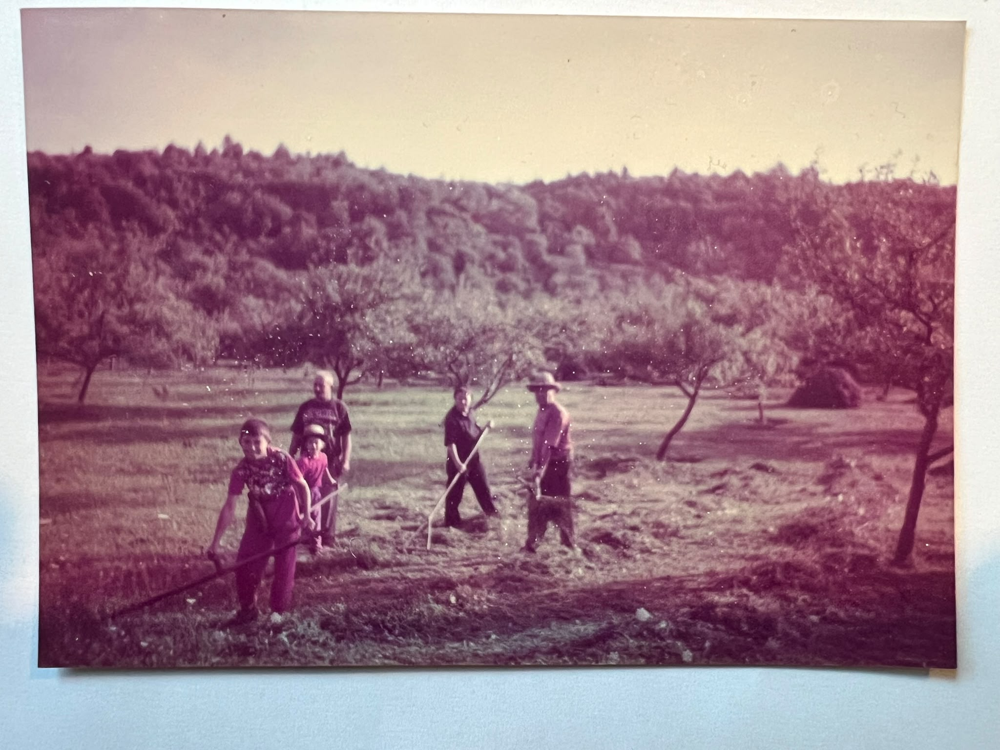
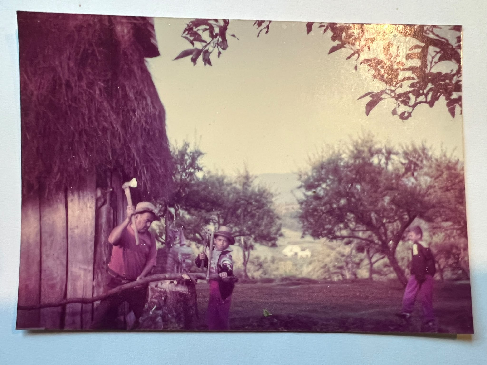
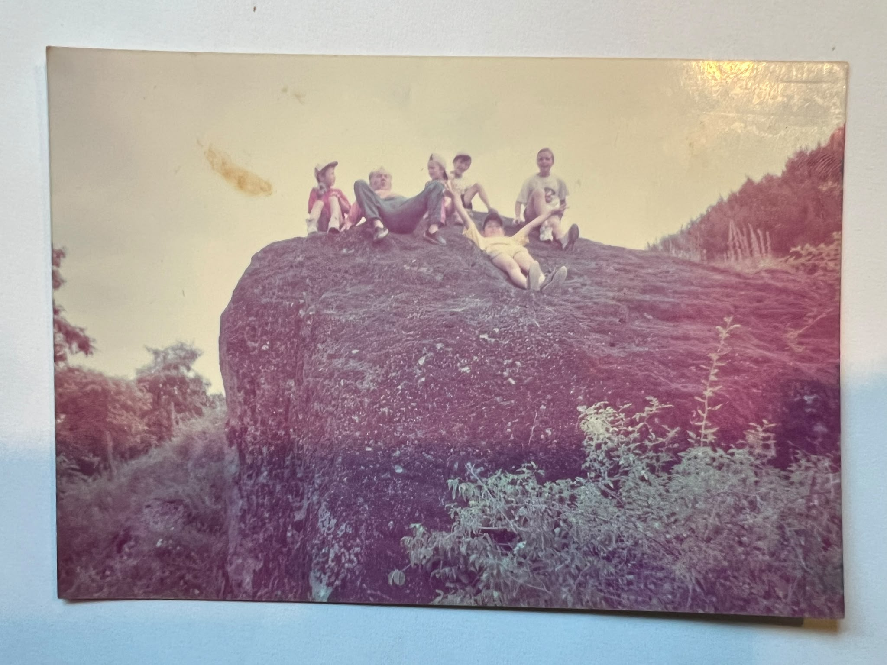

Hello world, both digital and analogue,
I’m Alex. I’m passionate about the outdoors, a sports enthusiast, a software engineer by profession and, these days, a tech leader. Alongside all of that, I would add an entrepreneurial mindset, which I tend to bring into most things I do.
Who I am today is very much a result of how I grew up and what I experienced along the way. I started playing basketball when I was eight and continued until I was 24. During the last five years, I played professionally for my hometown team in Cluj-Napoca in Romania’s first league, while also being part of the Romanian Men’s National Basketball Team. I consider that a defining part of who I am today.
For most of my life, I’ve combined things that might seem to compete with each other: sports and studies, basketball and software engineering, technology and the outdoors. I don’t really see them as competing, though. I believe they complement each other, counterbalance each other and, in many ways, need each other.
The physical balances the mental, the outdoors balances the screen, and stepping away from one often makes me better when I return to it.
By the way, I still do.
I’m also a father of two, Max and Iris. Together with my wife, Laura, I believe we’re doing a pretty good job raising them. The key word here is together. We’re a team.
01 / GROWING UP
Between analogue and digital
I was born in 1990, which means I’m part of a generation that remembers life before smartphones and social media, but was also there when all of it arrived.
I have vivid memories of my grandfather, my brother and me spending a week in the hills of Maramureș. We slept in a shelter we had made ourselves, with a campfire in front of it. We slept on hay, warmed tea over the fire in the morning, bathed in the river, climbed trees and could easily spend half an hour sitting in one without needing anything else to happen.


Those experiences stayed with me.
At the same time, I watched technology gradually squeeze itself into almost every corner of our lives. And I want to be very clear about something: I’m all for technology. Heck, I work in tech. Technology has given us extraordinary things, and I don’t believe the answer is to reject it, fear it or pretend we can go backwards.
But I do believe something becomes problematic when the digital world starts feeling more real than the world around you.

02 / WHY THIS MATTERS NOW
You are growing up in a very different environment
You are more connected than any generation before you, but you are also surrounded by more noise. Your attention is constantly being pulled in different directions by platforms, messages, feeds, creators, brands, games, algorithms and now AI.
And at the same time, you are being asked to make some pretty serious decisions. What do you want to study? What kind of work do you want to do? Where do you want to live? What matters to you? What kind of person do you want to become?
Those questions have always existed. What has changed is how much input surrounds you while you are trying to answer them.
I don’t think that makes your generation weaker or less capable. I just think it makes the environment harder to navigate.
03 / SOMETHING DIFFERENT
I feel some of this pressure myself
Technology has accelerated enormously in the workplace. I see it in the amount of information, the number of details, the constant context switching and the endless stream of communication and decisions. I don’t think I can continue in this 40-hour-a-week rhythm without changing something in the way I structure my time off.
I need breaks from it, not because I dislike technology, but because I want to return to it with a clear head.
And I think you may need that too.
Not as an escape, and not because your phone or laptop is the problem. Simply because sometimes you need enough distance from the noise to notice what you actually think, what you enjoy, what you care about and who you enjoy being around.


04 / ROMANIA, MY CHILDREN, AND YOU
I want to give something real back
Another reason is Romania. I feel a certain duty toward the country where I grew up. I received a lot from that place, from the people around me and from the experiences I had there, and I want to give something back. It doesn’t need to be grand. It just needs to be real.
Then there are my children. We live in Germany, while their grandparents are in Romania, which means they cannot have the same everyday relationship with them that I had with mine.
I cannot recreate my childhood for Max and Iris, nor do I want to. But I can try to create today’s version of some of the things I received from my grandfather: time outside, adventure, practical experience, stories, independence, responsibility and memories that don’t begin with a screen.

And that thought naturally extends beyond my own children.
Because you deserve those kinds of experiences too.
You deserve moments when no one is trying to sell you something, influence you, measure your engagement or keep you scrolling. You deserve space to be bored, curious, uncomfortable, useful, social, quiet, physical and present.


05 / WHAT I WANT TO CREATE FOR YOU
I’m not trying to give you answers
I don’t know what you should study. I don’t know what career you should choose, where you should live or what kind of person you should become. That is yours to figure out.
What I want to do is create an environment where, for a short period of time, some of the noise disappears. A place where you can spend time with other people without constantly reaching for a phone. Where you can walk, cook, build, carry, talk, laugh, struggle a little, get bored, solve problems, sit around a fire and experience things directly.
Because some things cannot be experienced through a screen.
You can watch someone climb a mountain, but that is not the same as your own legs getting tired on the way up. You can message someone all day, but that is not the same as sitting across from them for hours. You can consume endless content about confidence, resilience or independence, but those things usually grow when you actually have to do something yourself.


07 / WHY UNPLUG TO RECONNECT
An invitation to step out of the noise for a while
That is where Unplug to Reconnect comes from.
It is not a rejection of technology, it is not an attempt to go backwards, and it is not me telling you how you should live. It is an invitation to step out of the noise for a while and see what happens.
Maybe you come back with a new idea. Maybe you make a close friend. Maybe you discover that you like being outdoors more than you thought. Maybe you gain some confidence. Maybe you get clarity on something that has been sitting in the back of your mind.

Or maybe you simply have a really good week.
That is enough too.
My belief is simple: as technology becomes more powerful and more present in your life, deliberately creating space for offline human experience will become increasingly valuable.
LESS DIGITAL. MORE ANALOGUE.
Explore Unplug to Reconnect